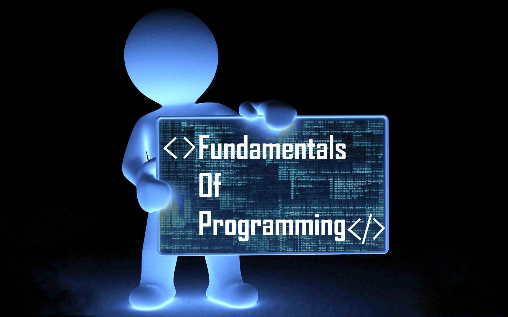

Programming Fundamentals for Robotics
This tutorial will cover programming fundamentals, including variables, loops, and conditional statements in Python and C++.
Section 1: Understanding Variables and Data Types
Variables are used to store data that your program can manipulate. In robotics, variables store values like sensor readings or robot positions.
# Python Example
speed = 10 # speed is a variable storing an integer value
// C++ Example
int speed = 10; // speed is a variable storing an integer value
Section 2: Control Flow - If, Else, and Loops
If-Else Statements are used to make decisions based on conditions.
# Python Example
if speed > 5:
print("Speed is high!")
else:
print("Speed is low!")
// C++ Example
if (speed > 5) {
cout << "Speed is high!" << endl;
} else {
cout << "Speed is low!" << endl;
}
Section 3: Functions and Modular Programming
Functions are blocks of reusable code that perform specific tasks. In robotics, you can use functions to control robot actions like moving forward or turning.
# Python Example
def move_forward():
print("Moving forward")
move_forward()
// C++ Example
void moveForward() {
cout << "Moving forward" << endl;
}
moveForward();
Section 4: Using Libraries and Modules
In robotics, many pre-built libraries can be used to interact with hardware like sensors and motors.
# Python Example
import RPi.GPIO as GPIO # Importing a library to control Raspberry Pi's GPIO pins
// C++ Example
#include // Library to interact with Raspberry Pi's GPIO pins
Conclusion
By learning these basic programming concepts, you are now ready to start writing more complex code that can control robots. As you build projects, you'll apply these fundamentals in real-world scenarios!